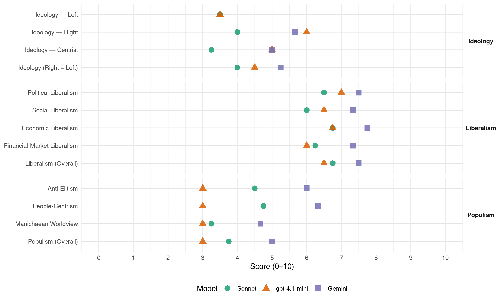

VMRO-NP (North Macedonia, 2006)
manifesto_id 89511_200607
Get full text: This site shows derived annotations and short verbatim quotes only. The full manifesto text is © Manifesto Project / WZB — obtain it via manifesto-project.wzb.eu using the manifesto_id above.
Headline scores
| Dimension | Sonnet | gpt-4.1-mini | Gemini |
|---|---|---|---|
| Populism (Overall) | 3.8 | 3.0 | 5.0 |
| Anti-Elitism | 4.5 | 3.0 | 6.0 |
| People-Centrism | 4.8 | 3.0 | 6.3 |
| Manichaean Worldview | 3.2 | 3.0 | 4.7 |
| Ideology (Right − Left) | 4.0 | 4.5 | 5.2 |
| Liberalism (Overall) | 6.8 | 6.5 | 7.5 |
| Political Liberalism | 6.5 | 7.0 | 7.5 |
| Social Liberalism | 6.0 | 6.5 | 7.3 |
| Economic Liberalism | 6.8 | 6.8 | 7.8 |
| Financial-Market Liberalism | 6.2 | 6.0 | 7.3 |
Evidence per dimension
Economic Liberalism
Gemini · score 8.0 · verified · chunk 1
“неприкосновеноста на сопственоста во нејзиниот изворен облик”
за главен фактор на општествениот развиток ја смета неприкосновеноста на сопственоста во нејзиниот изворен облик, како индивидуалната
Gemini · score 8.0 · verified · chunk 2
“Максимална либерализација во кластерите и воведување”
вештини во својата област; Максимална либерализација во кластерите и воведување мерки кои ќе обезбедат домашната конкуренција
Gemini · score 8.0 · verified · chunk 3
“целосна либерализација на телекомуникацискиот пазар”
Ќе извршиме целосна либерализација на телекомуникацискиот пазар, преку: најитно распишување меѓународен тендер
Gemini · score 7.0 · verified · chunk 4
“развивање на претприемничкиот дух”
основна цел развивање на претприемничкиот дух кај младите луѓе.
gpt-4.1-mini · score 7.0 · verified · chunk 1
“засилена инвестициска активност од приватниот и од јавниот сектор”
…ќе овозможиме засилена инвестициска активност од приватниот и од јавниот сектор. Ефикасно и ефективно ќе ги заокружиме реформите во финансискиот систем, реформите во даночниот систем, реформите во банкарскиот систем и порастот на кредитниот потенцијал.
gpt-4.1-mini · score 8.0 · verified · chunk 2
“поттикнување на конкурентноста на земјоделството и на прехранбените производи”
…Потпрограма за земјоделство Потпрограмата за земјоделство е повикана да оформи и да спроведе политика за земјоделството, полјоделството, градинарството, овоштарството, лозарството и сточарството, со која се поттикнуваат конкурентноста, ефикасноста и профитабилноста…
gpt-4.1-mini · score 7.0 · verified · chunk 3
“пазарот на трудот треба да овозможат приближување кон европските стандарди”
…Според ВМРО - Народна партија, реформите на пазарот на трудот треба да овозможат приближување кон европските стандарди за основните категории: вработеноста, невработеноста и цената на трудот…
gpt-4.1-mini · score 5.0 · verified · chunk 4
“државата треба да го промовира неговото финансирање од други извори”
Филмот е скапа индустрија и затоа државата треба да го промовира неговото финансирање од други извори (по пат на најразлични финансиски олеснувања), а да го ограничи своето учество во оваа индустрија. Ликовно творештво и галериска дејност - Државата обезбедува постојана поддршка на националните куќи за одбрани годишни програми,
Sonnet · score 7.0 · verified · chunk 1
“Максимална либерализација во кластерите”
Максимална либерализација во кластерите и воведување мерки кои ќе обезбедат домашната конкуренција во рамките на еден кластер да биде фер
Sonnet · score 7.0 · verified · chunk 2
“Максимална либерализација во кластерите”
Максимална либерализација во кластерите и воведување мерки кои ќе обезбедат домашната конкуренција во рамките на еден кластер да биде фер и ослободена од владин протекционизам и интервенции
Sonnet · score 7.0 · verified · chunk 3
“поголема конкуренција меѓу лекарите и установите”
поголема конкуренција меѓу лекарите и установите, што ќе обезбеди квалитетно здравство; оневозможување на сивата економија во јавниот здравствен сектор
Sonnet · score 6.0 · verified · chunk 4
“комерцијализација на културата”
но во насока на комерцијализација на културата, од куќите се очекува одреден дел од своите приходи да остваруваат и надвор од државната поддршка (донации од приватниот сектор, спонзорства, продажба на билети итн.)
Financial-Market Liberalism
Gemini · score 8.0 · verified · chunk 1
“зголемување на конкуренцијата во банкарскиот систем”
Владата посебно внимание ќе обрне на: зголемување на конкуренцијата во банкарскиот систем, преку создавање на законска регулатива
Gemini · score 7.0 · verified · chunk 3
“подобрен пристап до изворите на капитал”
за вработување нови работници, подобрен пристап до изворите на капитал за почнување со работа и за креирање
Gemini · score 7.0 · verified · chunk 4
“поволни кредитни линии за развивање”
Фондот би обезбедувал поволни кредитни линии за развивање на малите семејни
gpt-4.1-mini · score 7.0 · verified · chunk 1
“реформи во банкарскиот систем и порастот на кредитниот потенцијал”
…ќе овозможиме засилена инвестициска активност од приватниот и од јавниот сектор. Ефикасно и ефективно ќе ги заокружиме реформите во финансискиот систем, реформите во даночниот систем, реформите во банкарскиот систем и порастот на кредитниот потенцијал, преку зголемување на конкуренцијата и збогатување на понудата на банкарските услуги.
gpt-4.1-mini · score 5.0 · verified · chunk 3
“финансиска одржливост и приспособливост кон променливите потреби”
…современите системи за социјална заштита, вклучувајќи ги пензиите и здравството, обезбедувајќи ги нивната социјална соодветност, финансиска одржливост и приспособливост кон променливите потреби, така што ќе се поддржат учеството и поголемото задржување во работен однос…
Sonnet · score 7.0 · verified · chunk 1
“зголемување на конкуренцијата во банкарскиот систем”
зголемување на конкуренцијата во банкарскиот систем, преку создавање на законска регулатива која ќе овозможи влез на странски банки
Sonnet · score 6.0 · verified · chunk 2
“Полесна достапност до финансиски средства”
Полесна достапност до финансиски средства, со што кластерите ќе можат да ги надградуваат инвестициите во постојните капацитети.
Sonnet · score 7.0 · verified · chunk 3
“подобрен пристап до изворите на капитал”
подобрен пристап до изворите на капитал за почнување со работа и за креирање мали и средни претпријатија кои имаат големи потенцијали за создавање нови работни места
Sonnet · score 5.0 · verified · chunk 4
“поволни кредитни линии за развивање”
Фондот би обезбедувал поволни кредитни линии за развивање на малите семејни бизниси, што ќе обезбеди егзистенција на голем дел од популацијата.
Political Liberalism
Gemini · score 8.0 · verified · chunk 1
“дефинирањето и на целосното функционирање на институциите”
посебно внимание ќе им посвети на дефинирањето и на целосното функционирање на институциите на правниот систем
Gemini · score 8.0 · verified · chunk 2
“обезбедување на владеењето на правото”
привлекување на странски инвестиции. Еден од клучните предуслови затоа е обезбедување на владеењето на правото, што ќе создаде клима на сигурност
Gemini · score 7.0 · verified · chunk 3
“целосна компјутеризација на судството и на целата државна администрација”
целосна компјутеризација на судството и на целата државна администрација, со максимално користење, секаде каде што
Gemini · score 7.0 · verified · chunk 4
“дел од развиената демократија”
можат да се гордеат дека претставуваат дел од развиената демократија и од пазарното
gpt-4.1-mini · score 8.0 · verified · chunk 1
“ВМРО - Народна партија ќе се запага за воспоставување на правен систем”
…ВМРО - Народна партија ќе се запага за воспоставување на правен систем со јасна законска регулатива која ќе ги елминира наследените појави на произволност и на селективно делење на правдата.
gpt-4.1-mini · score 8.0 · verified · chunk 2
“почитување на човековите права и слободи, правата на малцинствата”
…примена на меѓународното право, почитување на човековите права и слободи, правата на малцинствата и правата и слободите на македонските државјани во дијаспората, како и развивање на конзуларните односи…
gpt-4.1-mini · score 6.0 · verified · chunk 3
“воспоставување систем за мониторинг и за анализа на сиромаштијата”
…За да се подготви соодветна политика за намалување на сиромаштијата, не се доволни само анализите на причините и на последиците од осиромашувањето на населението во Република Македонија. Потребен е и систем за мониторинг на сиромаштијата. Системот за мониторинг на сиромаштијата треба да обезбеди: разбирање на сиромаштијата, избор на реални приоритети и дефинирање на цели…
gpt-4.1-mini · score 6.0 · verified · chunk 4
“Република Македонија, во согласност со Уставот и со неговата правна сила, е обврзана да ги почитува”
Социјалната политика и социјалната правда се категории кон кои се стреми секоја демократска држава. Република Македонија, во согласност со Уставот и со неговата правна сила, е обврзана да ги почитува и да ги развива овие основни цивилизациски придобивки. Конкретните предлози кои што ние ги нудиме се:
Sonnet · score 7.0 · verified · chunk 1
“демократска држава во која економијата”
Македонските граѓани заслужуваат да живеат во демократска држава во која економијата постојано и непречено ќе расте
Sonnet · score 7.0 · verified · chunk 2
“владеењето на правото и на слободата на медиумите”
Присуството на Мисијата треба да се искористи за реализација на проекти кои би биле во функција на нашето доближување до ЕУ, особено на полето на владеењето на правото и на слободата на медиумите.
Sonnet · score 6.0 · verified · chunk 3
“широка поддршка на политичко ниво”
суштински услов за одржлива програма за реформи е дека треба да има широка поддршка на политичко ниво и помеѓу пошироката популација на земјата.
Sonnet · score 6.0 · verified · chunk 4
“дел од развиената демократија”
Општествата кои ќе се справат со овој проблем со право можат да се гордеат дека претставуваат дел од развиената демократија и од пазарното стопанство.
Liberalism (Overall)
Gemini · score 8.0 · verified · chunk 1
“неприкосновеноста на сопственоста во нејзиниот изворен облик”
за главен фактор на општествениот развиток ја смета неприкосновеноста на сопственоста во нејзиниот изворен облик, како индивидуалната
Gemini · score 8.0 · verified · chunk 2
“Максимална либерализација во кластерите и воведување”
вештини во својата област; Максимална либерализација во кластерите и воведување мерки кои ќе обезбедат домашната конкуренција
Gemini · score 7.0 · verified · chunk 3
“целосна либерализација на телекомуникацискиот пазар”
Ќе извршиме целосна либерализација на телекомуникацискиот пазар, преку: најитно распишување меѓународен тендер
Gemini · score 7.0 · verified · chunk 4
“дел од развиената демократија”
можат да се гордеат дека претставуваат дел од развиената демократија и од пазарното
gpt-4.1-mini · score 7.0 · verified · chunk 1
“реформи во финансискиот систем, реформите во даночниот систем, реформите во банкарскиот систем”
…ќе овозможиме засилена инвестициска активност од приватниот и од јавниот сектор. Ефикасно и ефективно ќе ги заокружиме реформите во финансискиот систем, реформите во даночниот систем, реформите во банкарскиот систем и порастот на кредитниот потенцијал.
gpt-4.1-mini · score 8.0 · verified · chunk 2
“почитување на човековите права и слободи, правата на малцинствата”
…примена на меѓународното право, почитување на човековите права и слободи, правата на малцинствата и правата и слободите на македонските државјани во дијаспората, како и развивање на конзуларните односи…
gpt-4.1-mini · score 6.0 · verified · chunk 3
“воспоставување систем за мониторинг и за анализа на сиромаштијата”
…За да се подготви соодветна политика за намалување на сиромаштијата, не се доволни само анализите на причините и на последиците од осиромашувањето на населението во Република Македонија. Потребен е и систем за мониторинг на сиромаштијата…
gpt-4.1-mini · score 5.0 · verified · chunk 4
“Република Македонија, во согласност со Уставот и со неговата правна сила, е обврзана да ги почитува”
Социјалната политика и социјалната правда се категории кон кои се стреми секоја демократска држава. Република Македонија, во согласност со Уставот и со неговата правна сила, е обврзана да ги почитува и да ги развива овие основни цивилизациски придобивки. Конкретните предлози кои што ние ги нудиме се:
Sonnet · score 7.0 · verified · chunk 1
“реформите во финансискиот систем, реформите во даночниот систем”
Ефикасно и ефективно ќе ги заокружиме реформите во финансискиот систем, реформите во даночниот систем, реформите во банкарскиот систем
Sonnet · score 7.0 · verified · chunk 2
“развивање на демократските процеси и за градење на цивилно општество”
за развивање на демократските процеси и за градење на цивилно општество; за економски реформи и за развивање на пазарното стопанство
Sonnet · score 7.0 · verified · chunk 3
“целосна либерализација на телекомуникацискиот пазар”
Ќе извршиме целосна либерализација на телекомуникацискиот пазар, преку: најитно распишување меѓународен тендер за втор и или трет фиксен телефонски оператор
Sonnet · score 6.0 · verified · chunk 4
“пазарното стопанство”
Општествата кои ќе се справат со овој проблем со право можат да се гордеат дека претставуваат дел од развиената демократија и од пазарното стопанство.
Anti-Elitism
Gemini · score 7.0 · verified · chunk 1
“мала група политички профитери и олигарси”
се најде во ситуација една мала група политички профитери и олигарси да приграбат во своите раце
Gemini · score 5.0 · verified · chunk 2
“криминално нетранепарентна приватизација во примарната”
СДСМ ги прекина, а постигнатите резултати ги анулира. Владата на СДСМ, наместо да спроведува реформи во здравството, се занимаваше единствено со криминално нетранепарентна приватизација во примарната и во секундарната здравствена заштита
Gemini · score 6.0 · verified · chunk 3
“сегашните раководни структури во Република Македонија немаат волја”
Тоа само потврдува дека сегашните раководни структури во Република Македонија немаат волја, ниту способност да се грижат
Gemini · score 6.0 · verified · chunk 4
“игнорантскиот однос на државата, т.е. на тогашната власт”
Како резултат на игнорантскиот однос на државата, т.е. на тогашната власт, младите луѓе решија
gpt-4.1-mini · score 3.0 · verified · chunk 1
“една мала група политички профитери и олигарси”
…се најде во ситуација една мала група политички профитери и олигарси да приграбат во своите раце се што им е од личен интерес, а сето останато да го уништат, не водејќи сметка токму за народот кој на изборите им го даде мандатот да ја водат и да ја управуваат државата.
gpt-4.1-mini · score 3.0 · verified · chunk 3
“сегашните раководни структури во Република Македонија немаат волја, ниту способност”
…социјалната сигурност на населението во последните четири години, од страна на Владата не е направено ништоза барем да се ублажат сериозните социјални последици за ризичниот дел од населението. Тоа само потврдува дека сегашните раководни структури во Република Македонија немаат волја, ниту способност да се грижат за социо-економската стабилност на граѓаните. Република Македонија е земја со највисока стапка на невработеност во Европа…
Sonnet · score 6.0 · verified · chunk 1
“една мала група политички профитери и олигарси”
се најде во ситуација една мала група политички профитери и олигарси да приграбат во своите раце се што им е од личен интерес
Sonnet · score 4.0 · verified · chunk 2
“криминално нетранспарентна приватизација во примарната”
Владата на СДСМ, наместо да спроведува реформи во здравството, се занимаваше единствено со криминално нетранспарентна приватизација во примарната и во секундарната здравствена заштита
Sonnet · score 4.0 · verified · chunk 3
“сегашните раководни структури во Република Македонија немаат волја”
Тоа само потврдува дека сегашните раководни структури во Република Македонија немаат волја, ниту способност да се грижат за социо-економската стабилност на граѓаните.
Sonnet · score 4.0 · verified · chunk 4
“игнорантскиот однос на државата, т.е. на тогашната власт”
Како резултат на игнорантскиот однос на државата, т.е. на тогашната власт, младите луѓе решија да го дадат својот глас за ИДНИНАТА.
Ideology — Centrist
Gemini · score 5.0 · verified · chunk 2
“криминално нетранепарентна приватизација во примарната”
СДСМ ги прекина, а постигнатите резултати ги анулира. Владата на СДСМ, наместо да спроведува реформи во здравството, се занимаваше единствено со криминално нетранепарентна приватизација во примарната и во секундарната здравствена заштита
gpt-4.1-mini · score 5.0 · verified · chunk 1
“Ние сме насочени кон остварување на државните, а не на партиските интереси”
…Ние сме насочени кон остварување на државните, а не на партиските интереси. Искуството и стручноста се на наша страна. Нашите луѓе се познати и на нив им се верува - како и на нашите идеи и програми.
gpt-4.1-mini · score 5.0 · verified · chunk 3
“широка поддршка на политичко ниво и помеѓу пошироката популација”
…Суштински услов за одржлива програма за реформи е дека треба да има широка поддршка на политичко ниво и помеѓу пошироката популација на земјата. Таквиот вид широка поддршка може да се постигне само ако постои опсежен дијалог за пазарот на трудот и за пошироките економски реформи…
Sonnet · score 3.0 · verified · chunk 1
“ВМРО-НП не е популистичка партија”
ВМРО-НП не е популистичка партија, пресметана на моментален успех. Ние сме модерна, а не застарена партија
Sonnet · score 3.0 · verified · chunk 2
“Тоа е нашето ветување и нашата заложба кон Македонија”
Тоа е нашето ветување и нашата заложба кон Македонија и кон нејзините граѓани.
Sonnet · score 3.0 · verified · chunk 3
“приоритетна задача е социјалната сигурност на граѓаните”
За ВМРО - Народна партија приоритетна задача е социјалната сигурност на граѓаните на Република Македонија.
Sonnet · score 4.0 · verified · chunk 4
“ќе одиме право кон својата цел”
затоа не свртуваме ни лево ни десно и, нема да се обѕираме на провокациите, туку ќе одиме право кон својата цел
Ideology — Left
gpt-4.1-mini · score 3.0 · verified · chunk 1
“една мала група политички профитери и олигарси”
…се најде во ситуација една мала група политички профитери и олигарси да приграбат во своите раце се што им е од личен интерес, а сето останато да го уништат, не водејќи сметка токму за народот кој на изборите им го даде мандатот да ја водат и да ја управуваат државата.
gpt-4.1-mini · score 4.0 · verified · chunk 3
“правична редистрибуција на доходот и на ресурсите”
…Намалувањето на сиромаштијата претпоставува создавање посебни услови: брзи промени во македонската економија, динамичен економски раст, соодветна социјална политика, правична редистрибуција на доходот и на ресурсите. Политиката на остварување на главната цел ќе биде насочена кон намалување на: општата стапка на сиромаштијата…
Sonnet · score 2.0 · verified · chunk 1
“социјална помош од 3.600 денари секој месец”
од 1. октомври социјална помош од 3.600 денари секој месец за 25.000 социјално загрозени семејства
Sonnet · score 4.0 · verified · chunk 2
“правична редистрибуција на доходот и на ресурсите”
Намалувањето на сиромаштијата претпоставува создавање посебни услови: брзи промени во македонската економија, динамичен економски раст, соодветна социјална политика, правична редистрибуција на доходот и на ресурсите.
Sonnet · score 5.0 · verified · chunk 3
“правична редистрибуција на доходот и на ресурсите”
брзи промени во македонската економија, динамичен економски раст, соодветна социјална политика, правична редистрибуција на доходот и на ресурсите.
Sonnet · score 3.0 · verified · chunk 4
“Социјалната политика и социјалната правда”
Социјалната политика и социјалната правда се категории кон кои се стреми секоја демократска држава.
Ideology (Right − Left)
Gemini · score 6.0 · verified · chunk 1
“континуитетот на политичкото дејствување на македонската десница”
Тргнувајќи од континуитетот на политичкото дејствување на македонската десница, почнувајќи од историското ВМРО
Gemini · score 4.0 · verified · chunk 2
“криминално нетранепарентна приватизација во примарната”
СДСМ ги прекина, а постигнатите резултати ги анулира. Владата на СДСМ, наместо да спроведува реформи во здравството, се занимаваше единствено со криминално нетранепарентна приватизација во примарната и во секундарната здравствена заштита
Gemini · score 5.0 · verified · chunk 3
“зачувување и негување на културниот идентитет на македонскиот народ”
Приоритети на земјата во областа на културата треба да бидат: зачувување и негување на културниот идентитет на македонскиот народ во самата Македонија
Gemini · score 6.0 · verified · chunk 4
“зачувување на националниот идентитет”
Во насока на промовирање и зачувување на националниот идентитет, државата треба
gpt-4.1-mini · score 5.0 · verified · chunk 1
“Ние сме насочени кон остварување на државните, а не на партиските интереси”
…Ние сме насочени кон остварување на државните, а не на партиските интереси. Искуството и стручноста се на наша страна. Нашите луѓе се познати и на нив им се верува - како и на нашите идеи и програми.
gpt-4.1-mini · score 4.0 · verified · chunk 3
“правична редистрибуција на доходот и на ресурсите”
…Намалувањето на сиромаштијата претпоставува создавање посебни услови: брзи промени во македонската економија, динамичен економски раст, соодветна социјална политика, правична редистрибуција на доходот и на ресурсите…
Sonnet · score 5.0 · verified · chunk 1
“македонската десница, почнувајќи од историското ВМРО”
Тргнувајќи од континуитетот на политичкото дејствување на македонската десница, почнувајќи од историското ВМРО
Sonnet · score 3.0 · verified · chunk 2
“правична редистрибуција на доходот и на ресурсите”
Намалувањето на сиромаштијата претпоставува создавање посебни услови: брзи промени во македонската економија, динамичен економски раст, соодветна социјална политика, правична редистрибуција на доходот и на ресурсите.
Sonnet · score 4.0 · verified · chunk 3
“правична редистрибуција на доходот и на ресурсите”
соодветна социјална политика, правична редистрибуција на доходот и на ресурсите.
Sonnet · score 4.0 · verified · chunk 4
“промовирање и зачувување на националниот идентитет”
Во насока на промовирање и зачувување на националниот идентитет, државата треба, врз основа на годишни конкурси, да обезбеди финансиска поддршка на домашна филмска продукција.
Ideology — Right
Gemini · score 6.0 · verified · chunk 1
“континуитетот на политичкото дејствување на македонската десница”
Тргнувајќи од континуитетот на политичкото дејствување на македонската десница, почнувајќи од историското ВМРО
Gemini · score 5.0 · verified · chunk 3
“зачувување и негување на културниот идентитет на македонскиот народ”
Приоритети на земјата во областа на културата треба да бидат: зачувување и негување на културниот идентитет на македонскиот народ во самата Македонија
Gemini · score 6.0 · verified · chunk 4
“зачувување на националниот идентитет”
Во насока на промовирање и зачувување на националниот идентитет, државата треба
gpt-4.1-mini · score 6.0 · verified · chunk 1
“почитувајќи ги христијанските вредности”
…Почитувајќи ги христијанските вредности како еден од камен-темелниците на современата цивилизација, со едновремено уважување на различните верувања и уверувања, пред граѓаните, односно гласачите на Република Македонија, објавуваме Изборна програма на ВМРО - Народна партија за Парламентарните избори 2006 година.
Sonnet · score 6.0 · verified · chunk 1
“Јакнењето на патриотизмот е еден од основните”
Јакнењето на патриотизмот е еден од основните постулати за успех на општеството и посебно за успешна одбрана на татковината
Sonnet · score 3.0 · verified · chunk 2
“суверенитетот, на територијалниот интегритет, на унитарниот карактер”
за зацврстување на суверенитетот, на територијалниот интегритет, на унитарниот карактер и на меѓународното етаблирање на државата
Sonnet · score 2.0 · verified · chunk 3
“зачувување на националниот идентитет”
зачувување и негување на културниот идентитет на македонскиот народ во самата Македонија… зачувување на националниот идентитет (фолклорот, јазикот, обичаите).
Sonnet · score 5.0 · verified · chunk 4
“промовирање и зачувување на националниот идентитет”
Во насока на промовирање и зачувување на националниот идентитет, државата треба, врз основа на годишни конкурси, да обезбеди финансиска поддршка на домашна филмска продукција.
Manichaean Worldview
Gemini · score 5.0 · verified · chunk 1
“најголемиот криминал врз сопствениот народ”
нема интерес за одбрана и развој на сопствената држава и нација, претставува најголемиот криминал врз сопствениот народ, извршен од страна
Gemini · score 4.0 · verified · chunk 3
“режимот на СДСМ од 2002 до 2006 година”
која во периодот на режимот на СДСМ од 2002 до 2006 година се претвори во речиси
Gemini · score 5.0 · verified · chunk 4
“од лажни ветувања и од туѓа милостиња”
Нашиот народ добро знае дека од лажни ветувања и од туѓа милостиња не се живее.
gpt-4.1-mini · score 3.0 · verified · chunk 1
“најголемиот криминал врз сопствениот народ”
…Уривањето на македонскиот патриотски дух и создавањето на апатично и дефетистичко општество… претставува најголемиот криминал врз сопствениот народ, извршен од страна на оваа власт предводена од СДСМ и, воедно најголем извор на загрозување на безбедноста и одбранбената способност на Р.Македонија на сите полиња.
gpt-4.1-mini · score 3.0 · verified · chunk 3
“невработеноста стана клучниот ризичен фактор за сиромаштијата и за социјалната исклученост”
…Порастот на бројот домаќинства-корисници на социјална помош и резултатите од субјективната сиромаштија на домаќинствата во истиот период потврдуваат дека животниот стандард на населението е во постојано опаѓање и дека одредени ранливи групи од населението имаат голем ризик од понатамошно осиромашување. Порастот на бројот домаќинства-корисници на социјална помош и резултатите од субјективната сиромаштија…
Sonnet · score 4.0 · verified · chunk 1
“најголемата измама извршена од страна”
Победата на СДСМ на изборите во 2002 година претставуваше промоција на најголемата измама извршена од страна на еден политички субјект
Sonnet · score 3.0 · verified · chunk 2
“многу зборови - малку дела”
И во оваа област се потврди непишаното правило за работењето на актуелната Влада: многу зборови - малку дела.
Sonnet · score 3.0 · verified · chunk 3
“многу зборови - малку дела”
И во оваа област се потврди непишаното правило за работењето на актуелната Влада: многу зборови - малку дела.
Sonnet · score 3.0 · verified · chunk 4
“Иднина наместо судбина”
И затоа ние велиме: Иднина наместо судбина. Иднината никој нема да ни ја подари, мораме сами да ја создадеме.
People-Centrism
Gemini · score 6.0 · verified · chunk 1
“доброто на мојот народ”
кога е во прашање иднинаната на мојата земја и доброто на мојот народ, постои само една страна
Gemini · score 5.0 · verified · chunk 3
“приоритетна задача е социјалната сигурност на граѓаните”
За ВМРО - Народна партија приоритетна задача е социјалната сигурност на граѓаните на Република Македонија.
Gemini · score 8.0 · verified · chunk 4
“настана од народот и за народот”
ВМРО-НП настана од народот и за народот,живее и расте со народот
gpt-4.1-mini · score 4.0 · verified · chunk 1
“Македонските граѓани заслужуваатда живеатво демократска држава”
…Во неа ќе владеат слободата, солидарноста и правдата. Македонските граѓани заслужуваатда живеатво демократска држава во која економијата постојано и непречено ќе расте и ќе се развива.
gpt-4.1-mini · score 2.0 · verified · chunk 3
“граѓаните на Република Македонија ќе добијат соодветна сатисфакција”
…а граѓаните на Република Македонија, корисници на здравствените услуги, ќе добијат соодветна сатисфакција за вложените средства во здравствениот систем. X. Социјална сигурност и заштита Сегашна состојба Во Република Македонија…
Sonnet · score 5.0 · verified · chunk 1
“доброто на мојот народ”
кога е во прашање иднинаната на мојата земја и доброто на мојот народ, постои само една страна
Sonnet · score 4.0 · verified · chunk 2
“социјалната сигурност на граѓаните на Република Македонија”
За ВМРО - Народна партија приоритетна задача е социјалната сигурност на граѓаните на Република Македонија.
Sonnet · score 4.0 · verified · chunk 3
“граѓаните на Република Македонија ќе добијат”
нов прилив на средства во државниот здравствен буџет и граѓаните на Република Македонија ќе добијат многу поквалитетни здравствени услуги.
Sonnet · score 6.0 · verified · chunk 4
“ВМРО-НП настана од народот и за народот”
Со љубов вера и надеж проткаена, ВМРО-НП настана од народот и за народот, живее и расте со народот и опстанува со народот.
Populism (Overall)
Gemini · score 6.0 · verified · chunk 1
“мала група политички профитери и олигарси”
се најде во ситуација една мала група политички профитери и олигарси да приграбат во своите раце
Gemini · score 3.0 · verified · chunk 2
“криминално нетранепарентна приватизација во примарната”
СДСМ ги прекина, а постигнатите резултати ги анулира. Владата на СДСМ, наместо да спроведува реформи во здравството, се занимаваше единствено со криминално нетранепарентна приватизација во примарната и во секундарната здравствена заштита
Gemini · score 5.0 · verified · chunk 3
“сегашните раководни структури во Република Македонија немаат волја”
Тоа само потврдува дека сегашните раководни структури во Република Македонија немаат волја, ниту способност да се грижат
Gemini · score 6.0 · verified · chunk 4
“настана од народот и за народот”
ВМРО-НП настана од народот и за народот,живее и расте со народот
gpt-4.1-mini · score 3.0 · verified · chunk 1
“една мала група политички профитери и олигарси”
…се најде во ситуација една мала група политички профитери и олигарси да приграбат во своите раце се што им е од личен интерес, а сето останато да го уништат, не водејќи сметка токму за народот кој на изборите им го даде мандатот да ја водат и да ја управуваат државата.
gpt-4.1-mini · score 3.0 · verified · chunk 3
“сегашните раководни структури во Република Македонија немаат волја, ниту способност”
…Тоа само потврдува дека сегашните раководни структури во Република Македонија немаат волја, ниту способност да се грижат за социо-економската стабилност на граѓаните. Република Македонија е земја со највисока стапка на невработеност во Европа, а високата невработеност е клучниот фактор за сиромаштијата и за социјалната исклученост на граѓаните…
Sonnet · score 5.0 · verified · chunk 1
“политички профитери и олигарси да приграбат”
се најде во ситуација една мала група политички профитери и олигарси да приграбат во своите раце се што им е од личен интерес
Sonnet · score 3.0 · verified · chunk 2
“катастрофалната политика во раководењето”
Како резултат од катастрофалната политика во раководењето и во преструктуирањето на претпријатието, од страна на Владата на СДСМ
Sonnet · score 3.0 · verified · chunk 3
“немаат волја, ниту способност да се грижат”
сегашните раководни структури во Република Македонија немаат волја, ниту способност да се грижат за социо-економската стабилност на граѓаните.
Sonnet · score 4.0 · verified · chunk 4
“ВМРО-НП настана од народот и за народот”
Со љубов вера и надеж проткаена, ВМРО-НП настана од народот и за народот, живее и расте со народот и опстанува со народот.
Social Liberalism